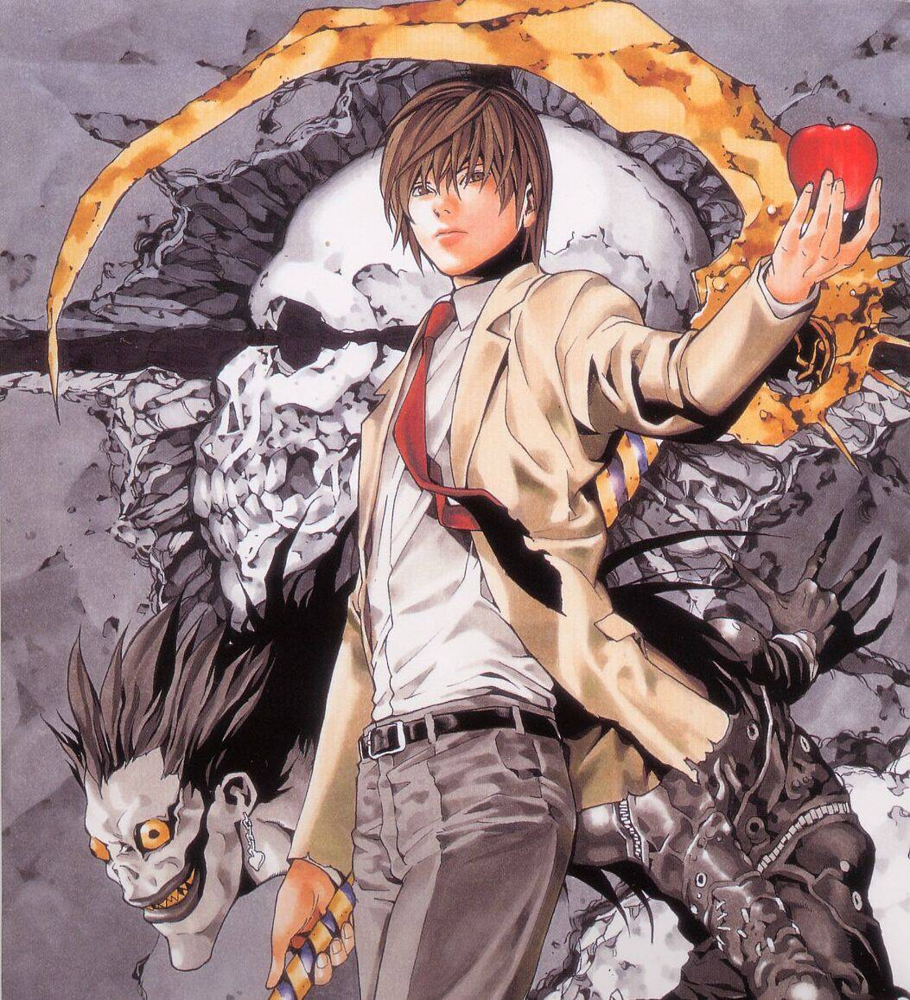

Now to tell you more about some of my interests! (also the main part is from this wikipedia article)
About death note

Light yagami
Death Note (stylized in all caps) is a Japanese manga series written by Tsugumi Ohba and illustrated by Takeshi Obata. It was serialized in Shueisha's shōnen manga magazine Weekly Shōnen Jump from December 2003 to May 2006, with its chapters collected in 12 tankōbon volumes. The story follows Light Yagami, a genius high school student who discovers a mysterious notebook: the "Death Note", which belonged to the shinigami Ryuk, and grants the user the supernatural ability to kill anyone whose name is written in its pages. The series centers around Light's subsequent attempts to use the Death Note to carry out a worldwide massacre of individuals whom he deems immoral and to create a crime-free society, using the alias of a god-like vigilante named "Kira", and the subsequent efforts of an elite Japanese police task force, led by enigmatic detective L, to apprehend him.
A 37-episode anime television series adaptation, produced by Madhouse and directed by Tetsurō Araki, was broadcast on Nippon Television from October 2006 to June 2007. A light novel based on the series, written by Nisio Isin, was also released in 2006. Additionally, various video games have been published by Konami for the Nintendo DS. The series was adapted into three live-action films released in Japan in June, November 2006, and February 2008, and a television drama in 2015. A miniseries titled Death Note: New Generation and a fourth film were released in 2016. An American film adaptation was released exclusively on Netflix in August 2017, and a series is reportedly in the works.
I'm a hardworking honors student who's considered to be one of Japan's best and brightest. And I… I will become the God of this new world.” - Light Yagami
Death Note media, except for video games and soundtracks, is licensed and released in North America by Viz Media. The episodes from the anime first appeared in North America as downloadable from IGN before Viz Media licensed it. The series was aired on YTV's Bionix programming block in Canada and on Adult Swim in the United States with a DVD release following. The live-action films briefly played in certain North American theaters, in 2008, before receiving home video releases. By April 2015, the Death Note manga had over 30 million copies in circulation, making it one of the best-selling manga series.
Plot
In Tokyo, a disaffected high school student named Light Yagami finds the "Death Note", a mysterious black notebook that can end anyone’s life as long as the writer knows both the target's true name and face. Initially disbelieving, Light quickly considers the renewed possibilities of such an ability at his disposal and annihilates high-profile Japanese criminals then targets international criminals. Five days after discovering the notebook, Light is visited by Ryuk, a "shinigami" and the Death Note's previous owner. Ryuk, invisible to anyone who has not touched the notebook, reveals that he dropped the notebook into the human world out of boredom and is amused by Light's actions.
As criminals around the world die from inexplicable accidents and heart attacks, the global media suggest that a single mastermind is responsible for the mysterious murders and name them "Kira" (キラ, the Japanese transliteration of the word "killer"). Hoping to apprehend Kira, Interpol requests the assistance of an enigmatic consulting detective, known as L, to assist in their investigation. Deducing that Kira is based in Japan, L tricks Light into revealing that he is in the Kanto region of Japan by manipulating him to kill a decoy. Furious, Light vows to kill L, whom he views as obstructing his plans. L deduces that Kira has inside knowledge of the Japanese police investigation, being led by Light's father, Soichiro Yagami. Under the suspicion that "Kira" could have family ties with members of the "Kira" investigation, L assigns a team of FBI agents to monitor the families of those connected with the investigation and L learns enough to designate Light as the prime suspect. Around this time, Light graduates from high school to college. L recruits Light into the Kira Task Force, with each trying to get the other to reveal crucial information.
Actress-model Misa Amane, having obtained a second Death Note from a shinigami named Rem, makes a deal with Rem for shinigami eyes, which reveal the names of anyone whose face she sees, at the cost of half her lifespan. Seeking to have Light become her boyfriend, Misa uncovers Light's identity as the original Kira, but Light has another motive: he intends to use Misa's shinigami eyes to discern L's true name. L deduces that Misa is likely the second Kira and detains her. Rem threatens to kill Light if he does not find a way to save Misa. Light arranges a scheme in which he and Misa temporarily lose their memories of the Death Note, and has Rem pass the Death Note to a less morally driven individual, Kyosuke Higuchi of the Yotsuba Group. With memories of the Death Note erased, Light joins the investigation and, together with L, deduces Higuchi's identity and arrests him. Light regains his memories and uses the Death Note to kill Higuchi, regaining possession of the book. After restoring Misa's memories, Light instructs her to begin killing as Kira, causing L to cast suspicion on Misa. With Light insinuating the investigation would lead to Misa's capture and execution, Rem realizes Light's plan all along was to have her sacrifice herself to kill L, as a shinigami may not kill others to prevent a human's death. After Rem kills L, she disintegrates and Light obtains her Death Note. The task force does not announce L's death and agrees to have Light operate as the new L. With Light working as both L and Kira, the investigation stalls but crime rates continue to drop as he no longer has a threat of capture.
Four years later, cults that worship Kira have risen. Two young men, raised as potential successors to L, are revealed: Near and Mello. Mello joins the mafia whilst Near joins forces with the US government. Mello kidnaps Director Takimura, who Light then kills, so Mello, kidnaps Light's sister and exchanges her for the Death Note, using it to kill almost all of Near's team. A Shinigami named Sidoh goes to Earth to reclaim his notebook and ends up meeting and helping Mello. Light uses the notebook to find Mello's hideout, but Soichiro is killed in the mission. Mello and Near exchange information and Mello kidnaps Mogi and gives him to Near. Kira's supporters attack Near's group, but they escape. Aizawa becomes suspicious of Light and meets with Near. As suspicion falls again on Misa, Light passes Misa's Death Note to a fervent supporter of Kira, Teru Mikami. He also appoints newscaster Kiyomi Takada as Kira's public spokesperson. Near has Mikami followed whilst Aizawa's suspicions are confirmed. Realizing that Takada is connected to Kira, Mello kidnaps her. Takada kills Mello but is killed by Light. Near arranges a meeting between Light and the current Kira Task Force members. Light tries to have Mikami kill Near as well as all the task force members, but Mikami's Death Note fails to work, having been replaced with a decoy. Perusing the names Mikami had written down, only Light's is missing, which proves Light is Kira. Light is grievously wounded in a scuffle and begs Ryuk to write the names of everyone present. Ryuk instead writes down Light's name in his Death Note, as he had promised to do the day they met, and Light dies.
One year later, the world has returned to normal and the Kira Taskforce Members are conflicted over whether they made the right decision. Meanwhile, cults worshipping Kira have risen, led by a woman resembling Misa. Three years later, Near, now functioning as the new L, receives word that a new Kira has appeared. Hearing that the new Kira is randomly killing people, Near concludes that the new Kira is an attention-seeker and denounces the new Kira as "boring" and not worth catching. A shinigami named Midora approaches Ryuk and gives him an apple from the human realm, in a bet to see if a random human could become the new Kira, but Midora loses the bet when the human writes his own name in the Death Note after hearing Near's announcement. Ryuk tells Midora that no human would ever surpass Light as the new Kira.
Other Forms of death note
Currently, The franchise has expanded to an anime, japanese live action movie series, Live action Drama, Novels, Games, Musical, and even an audio drama based in german
Each form of death note has it's own pros and cons of each version. The anime is the most faithful but cuts some parts out during the second half of the story. The japanese live action movies condense much of the story down that it becomes a bit hard to understand the characters. They also change light from a high-schooler to a college student and having a girlfriend. But in the end, each version gives the fans new content which I pick and choose what I think is conon to the story. (Death note: L change the worLd is a very good movie though, would recommend)
There is one media of Death note that has only cons. That In 2017, a western adaptation of Death note came out on netflix. Many people to this day hate this movie because of how loosely it follows the main plot to the point it has many plot holes. It just puts the same names onto the characters and then does whatever it wants. In my opinion, I actually think the movie could've been good if they introduced light turner as a completely different person to light yagami, instead of badly trying to reconstruct the original.
My Favorite Character
L Lawliet (apparently pronounced low-light) from the hit Manga/Anime Death Note
L is a world-renowned detective who takes on the challenge of catching the mass murderer known as Kira. In his investigation, L becomes suspicious of Light Yagami and makes it his goal to prove that Light is Kira. [1]
The Reason I like him a lot is because of how much I relate to his mannerisms. He also reeks of silliness. He is the strangest man within in the story, making him seem like the culprit. I'm not very good at explaining so here, have this quote that can explain why I like him alot.
"The Century's greatest detective, advertized as solving every case imaginable, how great must his burden be, how much pain must he go through at every single moment...past, present, and future. A burden so great it would leave you hunched over. A bitter taste in your mouth that would leave you longing for sweets" - Death note: Another note: The Los Angeles BB Murder Cases
His character is just so fascinating to me from how much He can figure out from such little evidence. The complexity of his character is one that is very hard to explain. Him being able to figure out that light yagami is kira early on within the story, keeping up with the traps kira lays down reguardless of the advantage kira has over him. It's so impressively stupid yet smart I don't know how he can deal with any of it.
One of my favorite quotes from L is the speech he gives to the children from the orphanage he's from. It shows us that he is self-aware of how dangerous he is. L is already very much morally gray when it comes to solving cases. He justifies his tactics by saying they are for justice dispite some of them bordering on torturous. He knows he's a horrible person, even if he stands on the side of good.
"There are many types
of monsters in this world:
monsters who will not show
themselves and who cause trouble,
monsters who abduct children,
monsters who devour dreams,
monsters who suck blood…
and monsters who always tell lies.
Lying monsters are a real nuisance;
they are much more cunning
than other monsters.
They pose as humans
even though they have no
understanding of the human heart;
they eat
even though they’ve
never experienced hunger;
they study
even though they have no
interest in academics;
they seek friendship even though
they do not know how to love.
If I were to encounter such monsters,
I would likely be eaten by it…
because in truth,
I am that monster."